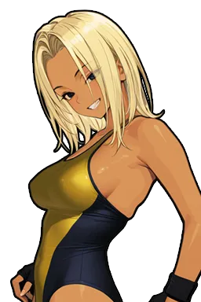

前提
このモックが直そうとしている3点
① 受諾後に選手選択のターンが無い。
② 進行画面でカード全体が読み取れない。
③ 試合後セリフポップが規格違反。
Engine.event.makeWarCard(management.js 15800) が
OVR降順で自陣と敵陣を機械的に1位vs1位・2位vs2位…と組むだけで、社長は誰も選べない。
「社長は舞台を作る人」という三本柱に対して、対抗戦だけ舞台作りの手が入らない。② 進行画面でカード全体が読み取れない。
renderWarMatchPreview(ui-common.js 764) は済んだ試合と次の試合を大きく描き、
その先を .pb-mrow.is-pending の1行テキストへ潰す。しかも並びが
メイン→前座の降順なので、「次にどこへ進むのか」が上から下へ読めない。③ 試合後セリフポップが規格違反。
_showWarVictoryChain(ui-common.js 1076) は
getPortraitUrl(face・1:1・256×256)を .u3b-upper(132×194・2:3)へ
object-fit:coverで入れており、顔の左右が確実に切れる。
加えて OVR・所属バッジが無く、外枠が --victory-panel-top/bottom の
紺のグラデーションパネルで、Stage(純黒)から浮いている。
直し方の方針。 3点とも「新しい様式を発明する」のではなく、
ゲーム内に既にある正しい様式へ寄せることで解く。
①は E-4 4団体勝ち残り対抗戦の代表編成(
_awEntryScreenHtml / .agw-entry-*)、
②は E-4 のライブボードの「全員の状態が常に見えている」考え方、
③は U3 で統一済みの顔出しブロック(_u3bSideHtml / .u3b-*)。
対応表はページ末尾。
画面1 — 申し込みモーダル（現行を規格に寄せる）
現行 showWarChallenge(ui-common.js 629)の骨格(A型モーダル・敵エースが挑戦状を持ってくる)は良いので残す。
現→変は3点だけ。
- 吹き出しの中の話者名を消す。 現行は
.mdl-a-speech-speakerにenemyAce.name.toUpperCase()を入れている。baseline §3「中身はセリフ本文のみ・名前や所属を入れない」に反する。話者は画像の下で示す。 - 画像を梯子に載せる。
.mdl-a-subject-portrait.bigはbackground-image直指定。 2:3 のXL 172×258（単独の主役）に固定する。 - 相手の3名と、その出場順をここで開示する。 受けるか辞退するかは「誰が、どの順で来るか」で決まる判断なので、
エース1人だけでなく
chip 46×66で3名を第1試合から順に並べる。これが画面2の前提になる （相手の並びは伏せない — 2026-08-02 Keisuke 裁定）。
Screen 1 / 申し込みモーダル (Stage・選択を迫るモーダル = 専用ボタンのみで閉じる)
対 抗 戦 ・ 挑 戦 状
記者
帝都女子プロレスから正式な対抗戦の申し入れが届きました。3試合の団体対決です。
三つでいい。それで、そちらの底が見える。

高階まさみ
Ace
 帝都女子プロレス
帝都女子プロレス
OVR84
向こうが立てる三人 ・ 出場順
第1試合
出羽鷹子OVR 80

第2試合
白銀麗子OVR 77
メイン
高階まさみOVR 84
3試合の団体対決。敗北はランクにも影響します。
この挑戦、どう受けますか？
⚔ 受けて立つ
対抗戦を受諾する
誰を、どの順で出すか決める画面へ進む
辞退
今回は見送る
団体評価↓ ／ 関係悪化
吹き出しのセリフはダミー。 実装時は選手セリフを
archetype（口調）× personality の既存プール方式で用意する。汎用文の使い回しは禁止。
受諾ボタンの文言も変える。 現行は「試合カード編成へ進む」と書いてあるのに、押すと
makeWarCard が自動編成して進行画面が開く。書いてあるのに存在しない工程だったので、
文言を実態に合わせるのではなく、書いてある工程の方を作る（＝画面2）。
画面2 — 出場順を決めるステップ（新設）
v0.1 → v0.2 で作り直した箇所（2026-08-02 Keisuke 裁定）。
v0.1 は「1行 = 1試合」の対戦カード表で、左右の枠を両方組み立てていく形に見えていた。
これをやめ、操作は「自軍3名を選んで出場順を決める」ことだけにする。
相手は3名も出場順も開示されたままで、こちらが動かせない据え置きの情報として各枠の頭に出す。
結果として「第N試合にこの子を置けば、あの相手と当たる」ことは枠の上で読めるが、
プレイヤーが組むのは自軍の並びだけ——相手をドラッグして組み替えるような操作は作らない。
自軍3名を選び、出場順（第1試合 → 第3試合＝メイン）を決める。
レーンは左から右へ時間が進み、一番右がトリ。各枠の頭には、その枠で待っている相手を
chip 46×66 で据える。
- 枠を選ぶ → 候補を押すの2手。フォーカス中の枠は金リング（遠征の同行者選択
.awpick-slot.focusedの作法）。 埋めた後は各枠の ◀ ▶ で隣と交換できる（順だけ直したいときに選び直させない）。 - 候補レールには 体調・OVR・因縁の有無を出す（v0.1 から維持）。出場停止/怪我は淡くして押せなくする。
- 相手側には体調バーを出さない。社長が知りえない情報なので、開示するのは顔・名前・OVR・因縁まで。
- 「おまかせ」は現行
makeWarCardと同じ OVR 降順（今の挙動が既定値として残る）。 埋めるのは自軍の3枠だけ。
Screen 2 / 出場順を決めるステップ (Stage・P5 Workflow)
Set Your Order
誰を、どの順で出すか
枠を選んでから候補を押す。
◀ ▶ で隣の枠と入れ替えられる。
◀ ▶ で隣の枠と入れ替えられる。
1 受諾›2 出場順を決める›3 試合進行›4 決着
相手の三人と、その出場順は既に分かっている。決めるのはこちらの並び。
先に出るトリ
第 1 試合
相手
出羽鷹子帝都 ・ OVR 80
VS

元気78
生駒エリカ
先鋒 ・ OVR 71
⚔ 因縁あり
第 2 試合
相手
白銀麗子帝都 ・ OVR 77
VS
＋
未定
中堅 ・ 選択中
第 3 試合Main
相手 ・ Ace
VS

疲れが見える61
深町真琴
大将 ・ OVR 78
出場可能選手
顔画像を押すと選手詳細／「この枠へ」で第2試合に入る
深町真琴
OVR78
体調 61 ・ Aerial
大久保桃子
OVR74
体調 83 ・ Allround
生駒エリカ
OVR71
体調 78 ・ ⚔因縁
松川杏樹
OVR69
体調 90 ・ Grappler

橘玲美
OVR66
体調 72 ・ Technician

黒江舞
OVR63
体調 88 ・ Striker

高津小春
OVR70
怪我 ・ 出場不可
おまかせは OVR の高い順に トリ → 中堅 → 先鋒 を埋めます（＝今までの自動編成と同じ並び）。
この画面のセリフについて。 v0.2 時点では吹き出しを置いていない。
もし選出時や開戦直前に一言を出すなら、実装時は選手セリフを archetype（口調）× personality の
既存プール方式で用意する。汎用文の使い回しは禁止（1本を複数キャラで共有しない）。
枠が埋まるまで開戦できない。 3枠すべて埋まるまで「この順で開戦」は無効（P5 の作法）。
ただし中断は許さない — 挑戦状を受けた後に編成から逃げられると、辞退のペナルティを回避できてしまう。
「おまかせ」を常に押せる状態にしておくことで、進めなくなる状況を作らない。
画面3 — 進行画面（作り直し）
スコアボード（.pb-banner / .pb-score-strip）はそのまま流用する。
作り直すのはその下のカード一覧。
- 並びを昇順（第1→第3）に変える。 現行は
for (let di = total-1; di >= 0; di--)でメインが上。 済んだ試合が上・これからが下、という時間の向きに合わせる。メインは一番下＝トリになる。 - 3試合すべてを常に描く。 未消化も
chip 46×66の顔と名前で置く（現行は文字1行）。 - 次の試合だけ大きい。
M 132×194の対置＋煽りセリフ。ここだけ操作ボタンが付く。
Screen 3 / 進行画面 (Stage・P7 Theatrical / 1試合目を消化した時点)
1—0
Score
勝ち越し中
Status
2 / 3
Remaining
大久保桃子 vs 白銀麗子
Next
Card ・ 第1試合 → メイン
○ 生駒エリカ
先鋒 ・ OVR 71
片エビ固め ・ 11分
MQ68
× 出羽鷹子
帝都 ・ OVR 80
先輩が取ってくれた一勝、無駄にはしません。
大久保桃子
中堅
 常磐女子プロレス
常磐女子プロレス
OVR74
一つ落とした。ここで戻す。それだけ。
白銀麗子
中堅
帝都女子プロレス
OVR77
第 3 試合 ・ Main
深町真琴（OVR 78） vs 高階まさみ（OVR 84・ACE） — 待機
NEXT の煽りセリフはダミー。 実装時は
archetype（口調）× personality の既存プール方式で用意する。汎用文の使い回しは禁止。
ここは相手・スコア状況で意味が変わる場所なので（先に取られた／取り返した／トリで背負う）、
文脈の分岐もプール側に持たせる。
実装時に必ず掛けること（baseline §5-D）。
「観る」は観戦モード iframe（z-index 500）から戻ってくるコールバック待ちになる。
タイムアウトと二重起動防止フラグをセットで書く（鉄則1）。
「スキップ」「残り全スキップ」「観る」は同じ1試合を二重に消化しうるので、
ハンドラ先頭で「自分が消化しようとしている index が本当に未消化か」を検証して、
違えば
console.warn して return する（鉄則2）。
画面4 — 試合後セリフポップ（現行 ↔ 新案）
左が現行、右が差し替え案。同じ選手・同じセリフで並べている。
現行 — _showWarVictoryChain / .war-victory-modal
取りました。次、繋ぎます。

生駒エリカ
✕ 顔素材が 1:1 なので左右が切れる
✕ OVR・所属バッジが無い
✕ 紺のパネルが Stage(純黒)から浮く
✕ 勝敗の記号が無い
✕ OVR・所属バッジが無い
✕ 紺のパネルが Stage(純黒)から浮く
✕ 勝敗の記号が無い
新案 — upper(2:3) L 150×224 / Stage パネル / ○記号
○ WIN
取りました。次、繋ぎます。
生駒エリカ
先鋒 ・ 第1試合
常磐女子プロレス
OVR71
勝者の一言はダミー。 実装時は
archetype（口調）× personality の既存プール方式で用意する（
VICTORY_LINES と同じ持ち方）。
汎用文の使い回しは禁止 — 1本を複数キャラで共有しない。
同じ枠を敗者側（対抗戦終了後の敵エースの一言 _showWarEnemyAceStatement）にも使う。
灰色化と下辺の無彩色化だけで負けを示し、LOSE の文字は出さない（baseline §5-B）。
新案（敗者側）— 敵エースの総括
× 帝都女子プロレス
三つのうち一つ。それが今日の答えだ。次は違う。
高階まさみ
Ace
帝都女子プロレス
OVR84
敵エースの総括もダミー。 他団体の選手にも同じ規則が掛かる —
archetype（口調）× personality の既存プール方式で用意し、汎用文の使い回しは禁止。
勝ち越された側／負け越した側で意味が変わるので、結果の分岐もプール側に持たせる。
差し替えは1行では済まない。
_showWarVictoryChain は
getPortraitUrl（face）を渡している。getUpperUrl へ変えるだけでなく、
size:'l'・role・orgBadge・statValue を _u3bSideHtml に渡す必要がある。
.war-victory-modal の紺グラデーション（--victory-panel-top/bottom）は
--stage-card-top/bottom へ差し替える。--victory-blue は
.u3b-theme-stage.is-victory が名前色に使っているが、対抗戦は自陣＝--c-positive なので
青は廃止して良いか要判断（JT・天頂戦も同じテーマを共有しているため、影響範囲は対抗戦だけではない）。
画面5 — 最終結果画面
現行 renderWarFinalResult の情報（Score / Result / Avg MQ / Heat）はそのまま。
変えるのは見せ方で、勝敗を「3人が並んで立っている絵」で読ませる。
- 出場した3名を隊列にする（baseline §2-B）。 個々に額縁を付けず、群の外枠を1つ・18px 重ね・
drop-shadow。 大将を中心（L 150×224）、脇をM 132×194。負けた選手だけ灰色に落ちるので、 2勝1敗が絵で分かる。 - 素材は アッパー
image/upper/{id}.webpに統一する（v0.2 で変更）。 v0.1 はstand（全身立ち姿）を使っていたが、隊列は上半身が重なる見え方なので 全身と切り抜きが混在して中途半端になっていた。顔の高さが3人で揃うアッパーに寄せる。 左右反転はしない — アッパーを反転すると顔が崩れるため（反転してよいのは スタンド画像を対面に置くときだけ、というプロジェクト裁定）。 引き換えにstand/fullが持つ OVR による絵の差し替えは効かなくなるが、 ここは成長を見せる場ではなく3人が並んで持ち帰った結果を見せる場なので、顔が揃うことを取る （2026-08-02 Keisuke 裁定）。 - 1試合ごとの詳細は下の要約行に畳む。 顔の大きい対置を3回繰り返すと、隊列の効果が消える。
- スコア表記は em ダッシュ区切り
2 — 1（baseline §5-B）。
Screen 5 / 最終結果 (Stage・P7 Theatrical)
2—1
Score
🏆 勝ち越し
Result
71
Avg MQ
HOT
Heat
Sランク王者・帝都女子プロレスに勝ち越し。団体の格が上がった。
常磐女子プロレス
三人が持ち帰った 2勝1敗
生駒エリカ先鋒 ○
深町真琴大将 ○
大久保桃子中堅 ×
第1試合
○ 生駒エリカ
—
出羽鷹子 ×
MQ68
第2試合
× 大久保桃子
—
白銀麗子 ○
MQ70
メイン
○ 深町真琴
—
高階まさみ ×
MQ76
Heat🔥 HOT
この画面自体はセリフを持たない。 上の一文（「Sランク王者…勝ち越し」）は地の文なので、
鉤括弧も吹き出しも付けない。セリフが出るのは閉じた後の勝者チェーン／敵エース総括で、
そこには画面4と同じ規則が掛かる —
archetype（口調）× personality の既存プール方式。汎用文の使い回しは禁止。
閉じた後の順序を固定する（§5-D 鉄則4）。 現行
closeWarFinalResult は
「閉じる → 2秒 → 勝者セリフチェーン → 敵エース総括」。この順序は仕様として正しいので変えない。
ただし勝者が0人でも敵エース総括は必ず出ることと、
途中で週送りが走らないこと（_beginWarUiTransition のトークン検証）を維持する。
参照した既存様式と流用部品
| モックの部品 | 元にした実装 | 扱い |
|---|---|---|
.wf-side / .wf-slot / .wf-bubble / .wf-up / .wf-org / .wf-stat |
_u3bSideHtml(ui-common.js 148) と .u3b-*(index.html 2163〜2239) |
そのまま流用。モックはクラス名を変えただけで構造・寸法は同一。実装では _u3bSideHtml を呼ぶ |
| 画面1 モーダル外枠・記者ストリップ・決裁トレイ | _mdlAOpen / _mdlAReporterStrip / .mdl-a-*（A型モーダル） |
流用。主役ブロックだけ .mdl-a-subject-portrait.big → _u3bSideHtml(size:'xl') に差し替え |
| 画面1 相手3名＋出場順の開示（chip 並び） | 新設。梯子は baseline §2 の chip 46×66 |
新規。v0.2 で出場順のラベルを追加（相手の並びは伏せない） |
| 画面2 全体（出場順レーン＋候補レール＋フッター） | E-4 代表編成 _awEntryScreenHtml(ui-common.js 18403) / .agw-entry-*(index.html 3831〜3857) |
骨格を流用。候補レール・フッター・「おまかせ」ボタンは構造そのまま。 v0.2 で盤面を対戦カード表 → 自軍の出場順レーンへ差し替え（相手は各枠の据え置き情報） |
| 画面2 コンディションバー | _agwConditionBar / .agw-cond |
そのまま流用（3段の閾値・ラベルも同じ） |
| 画面2 枠フォーカス（金リング） | 遠征の同行者選択 .awpick-slot.focused(index.html 5183) |
操作モデルのみ流用。配色は Office cream → Stage へ翻訳 |
| 画面3・5 バナー / スコアストリップ | .pb-banner / .pb-score-strip(index.html 2951/2990)、renderWarMatchPreview |
そのまま流用（対抗戦ヘッダー共通部品として既に成立している） |
| 画面3 済／次／未 の3状態表示 | E-4 ライブボード _agwLiveTeamHtml の ring / wait / out 3状態 |
考え方を流用。「全員が常に見えていて、状態だけが変わる」 |
| 画面3 観る／スキップ／残り全スキップ | App.warWatchMatch / warSkipMatch / warSkipAll |
導線は現状維持。置き場所だけ変える |
| 画面4 ポップの外枠 | .war-victory-overlay（枠だけ流用）／ .war-victory-modal の紺パネルは廃止 |
差し替え。面色を --stage-card-top/bottom に |
| 画面5 隊列 | baseline §2-B（秋4団体対抗戦の優勝3名・春タッグの優勝2名と同じ作法） | 作法を適用。対抗戦では初出。v0.2 で素材を stand → upper に統一（反転なし） |
| 団体エンブレム | orgIconHtml() / Engine.util.getOrgIconPath、image/org/org-*.png |
実画像。頭文字の代用はしない（baseline §5） |
チェックリスト自己確認（CLAUDE.md 頻出違反7項目）
| # | 項目 | このモックでの扱い |
|---|---|---|
| 1 | 選手画像は 2:3 か | ○ 使用したのは XL 172×258 / L 150×224 / M 132×194 / S 108×162 / chip 46×66 の5段のみ。梯子外の寸法を作っていない。
画面5 の隊列は v0.2 で upper に統一し、object-fit:contain でトリミングしない。左右反転もしない |
| 2 | 正方形の顔は 52px 以下か | ○ 正方形の顔は1つも使っていない（現行との比較用に置いた左側の face だけが例外で、それが「切れる」という指摘そのもの） |
| 3 | 吹き出しは画像の上か | ○ 全て .wf-slot（予約枠・52px）で画像の上。尻尾は水平中心。クリーム＋黒文字。名前・所属は吹き出しの外 |
| 4 | 複数人は隊列か | ○ 画面5 は外枠1つ・18px 重ね・drop-shadow。名前の列にも同じ重なりを掛けている |
| 5 | 勝敗が画像から読めるか | ○ 敗者は grayscale(.9) brightness(.72)＋下辺無彩色。記号は ○×△ のみ。LOSE の文字なし |
| 6 | 待ちに時限の保険 | — モックには進行が無い。画面3の注記に実装要件として明記した |
| 7 | 1操作＝1進行 | — 同上。観る／スキップ／全スキップの再入検証を注記した |
決着済み（2026-08-02 Keisuke レビュー）
| 論点 | 裁定 | このモックへの反映 |
|---|---|---|
| 対戦表 vs 順序方式 （v0.1 の「判断が要る点」②） |
順序方式を採る。 プレイヤーが決めるのは自軍3名と、その出場順だけ。
対戦カードを組み立てる操作は作らない。 ただし相手の3名と出場順は開示したままにする（伏せない）。 結果として「第N試合に置けば誰と当たるか」は枠上で読める。 |
画面2 を出場順レーンへ全面差し替え。各枠の頭に、その枠で待つ相手を
chip 46×66 で据え置き（掴めるようには見せない）。
画面1 の相手3名にも出場順ラベルを追加 |
| 画像素材 （画面5 の隊列） |
アッパー image/upper/{id}.webp に統一。
左右反転は禁止（反転してよいのはスタンド画像の対面配置だけ。アッパーは顔が崩れる） |
stand_* → upper_*。梯子は 中心 L 150×224 / 脇 M 132×194 のまま、
隊列規格（外枠1つ・18px 重ね・drop-shadow・敗者グレースケール）も維持。
object-fit:contain でトリミングなし |
| セリフの扱い | モックのセリフはすべてダミー。実装時は archetype（口調）× personality の既存プール方式で用意し、 汎用文の使い回しは禁止 | 画面1〜5 のセリフ箇所の直下に注記を追加 |
判断が要る点（実装前に決めること）
- 試合数は3固定か。
ev.matchCountは挑戦状側が決めており、makeWarCardは既定5。今回の指示は3試合前提で作ったが、5試合のとき画面2の枠が5つになる。 枠の幅はS 108×162なので、5枠だと 108×5＝540px となり 375px では横に収まらない（レーンを横スクロールにするか、2段に折るかを決める必要がある）。 「対抗戦は常に3試合」に寄せるなら仕様側の変更が要る。 - 選出の自由度に上限を設けるか。 何も縛らないと「格下3人を出して負けを最小化」も
「エース3人を出して勝ちに行く」も自由になる。E-4 は
_eligibleで怪我人だけ弾いている。 対抗戦でも同じで良いか（例：直近の興行で出場した選手は体調ペナルティ、など）。 --victory-blueを残すか。 画面4 の名前色。対抗戦の自陣は--c-positiveなので 青は文脈から外れているが、.u3b-theme-stage.is-victoryは JT・天頂戦・特別興行の総括とも共有している。 対抗戦だけ外すか、全部まとめて見直すか。- 因縁の見せ方。 画面2 の枠には
⚔ 因縁ありとだけ出し、 rivalry の数値も相手の名指しも出していない（枠の相手は上に据えてあるので、名前を重ねる必要がない）。 候補レールでは「その枠の相手と因縁があるか」までしか分からないが、 誰との因縁かを候補側でも出すかは要判断。 - おまかせの既定値。 現行の
makeWarCard（OVR降順・トリが最強）をそのまま 既定にしてある。ここを変えると既存プレイヤーの体感が変わるので、変えないのが安全。 - 相手の順が見えることで最適化が進みすぎないか（要観察）。 開示は決着済み（上表）だが、「格下にエースをぶつけて確実に1つ取る」が最適解として固定化すると スプレッドシート寄りになる。おまかせの位置づけ（推奨として見せるか、ただの初期値か）と、 上の「自由度に上限を設けるか」で調整する余地を残しておく。
改訂履歴
- v0.2 (2026-08-02 Keisuke レビュー反映: 選択＝出場順方式／画面5を upper へ／セリフ実装要件)
- 画面2 を対戦カード表 → 出場順を決める方式へ差し替え。操作は「自軍3名を選び、出る順を決める」だけ。
相手の3名と出場順は開示したまま各枠に据え置き、こちらから組み替えられる要素にはしない。
候補レールの体調バー・OVR・因縁バッジ・おまかせボタンは維持。枠の
◀ ▶入れ替えを追加 - 画面1 の相手3名に出場順ラベル（第1試合／第2試合／メイン）を追加し、画面2 と並びを一致させた
- 画面5 の隊列を
stand_*→upper_*に統一。梯子（中心 L／脇 M）と隊列規格 （外枠1つ・18px 重ね・drop-shadow・敗者グレースケール）は維持。左右反転は掛けない - 画面1〜5 のセリフ箇所に、ダミーである旨＋実装は archetype × personality の既存プール方式・汎用文の使い回し禁止を注記
- 「判断が要る点」から対戦表 vs 順序方式と画像素材を外し、決着済みの表へ移した
- 375px の横溢れを再確認（レーン 332px / 隊列 312px。検算は CSS 末尾のコメント）。
.wf-stepsを折り返し可に、.wf-pick-footを狭幅で縦積みに変更
- 画面2 を対戦カード表 → 出場順を決める方式へ差し替え。操作は「自軍3名を選び、出る順を決める」だけ。
相手の3名と出場順は開示したまま各枠に据え置き、こちらから組み替えられる要素にはしない。
候補レールの体調バー・OVR・因縁バッジ・おまかせボタンは維持。枠の
- v0.1 (2026-08-02) 起案。①受諾後の選手選択が無い ②進行画面でカード全体が読めない ③試合後セリフポップが規格違反（face 1:1 を 2:3 枠へ）の3点を、既存の正しい様式へ寄せて解く案として作成